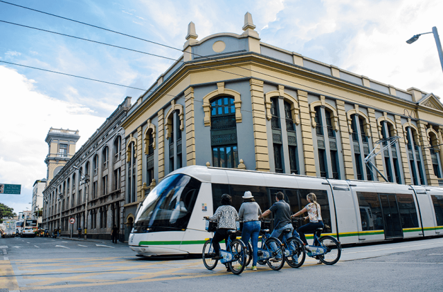

Actualidad
Ciudad innovadora

Medellín ha sido reconocida en múltiples ocasiones como una de las ciudades más innovadoras de América Latina, gracias a sus avances en tecnología, educación y desarrollo urbano. En los últimos años, la ciudad ha impulsado proyectos que integran la transformación digital con el bienestar de sus ciudadanos.
El crecimiento de empresas tecnológicas y centros de innovación ha permitido que Medellín atraiga inversión extranjera y genere nuevas oportunidades laborales. Además, programas educativos enfocados en habilidades digitales han fortalecido el talento joven de la ciudad.
Movilidad inteligente

La ciudad de Medellín continúa desarrollando sistemas de transporte eficientes y sostenibles, como el Metro, el Metrocable y nuevas alternativas eléctricas que buscan reducir el impacto ambiental. Estas iniciativas han sido reconocidas a nivel internacional como modelos de movilidad urbana.
Además, se están implementando tecnologías que permiten mejorar la planificación del tráfico y reducir la congestión en las principales vías. Estas soluciones buscan mejorar la calidad de vida de los ciudadanos y hacer de la ciudad un lugar más organizado.
El emprendimiento tecnológico crece en Medellín

Medellín se ha convertido en un punto clave para el emprendimiento tecnológico en Colombia. Cada vez más startups emergen en la ciudad con propuestas innovadoras en áreas como fintech, educación digital y desarrollo de softwar
El apoyo de incubadoras, espacios de coworking y programas de formación ha sido fundamental para este crecimiento. Gracias a esto, muchos emprendedores han logrado posicionar sus proyectos a nivel nacional e internacional.